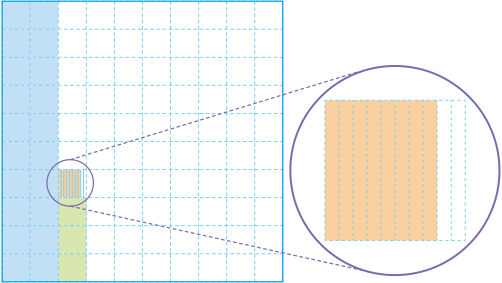

3. 소수의 덧셈과 뺄셈
소수 세 자리 수를 알아볼까요
수학
56~59
쪽
수학 익힘
42
쪽
전체 크기가 1인 모눈종이에서 색칠한 부분이 나타내는 수를 소수로 쓰고 읽어 보세요.

0.1짜리 모눈을 2칸, 0.01짜리 모눈을 3칸, 0.001짜리 모눈을 8칸 색칠하였으므로 색칠한 부분이 나타내는 수는 소수로 0.238이라 쓰고, 영 점 이삼팔이라고 읽습니다.